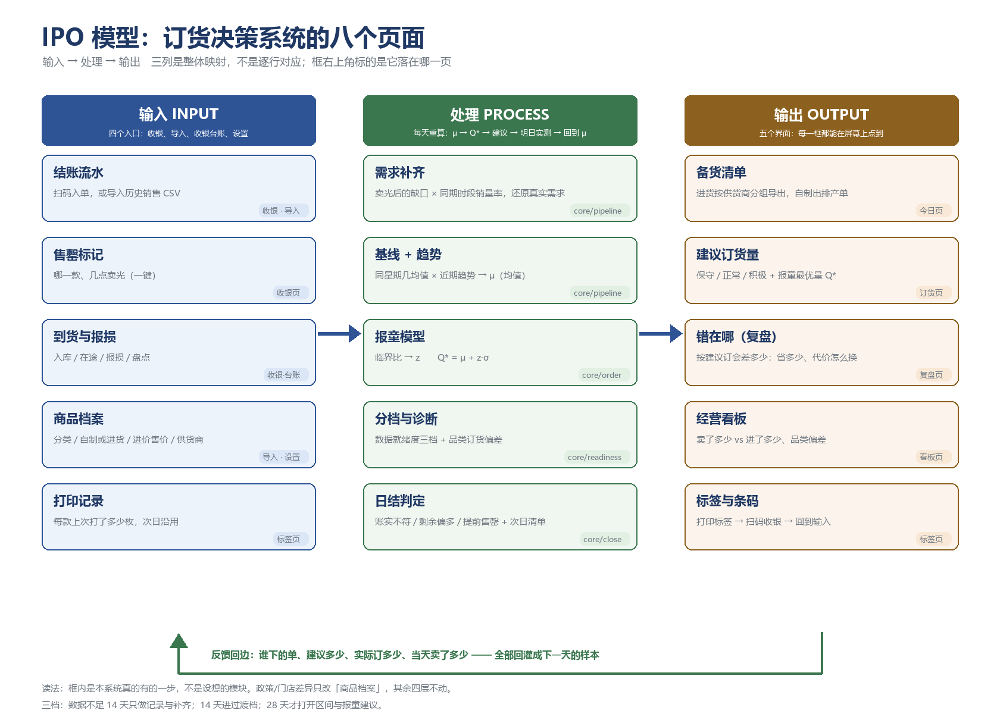
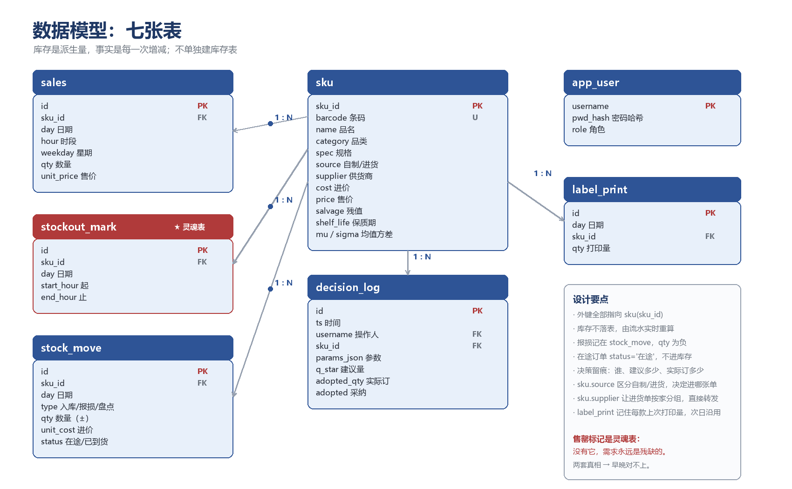

管理信息系统 · 期末项目2026 / 12
小店订货决策台
该订多少
把“我凭感觉订”，变成三个能算的数字：
少了亏多少、多了亏多少、钱不够先订谁。
Python · Streamlit · SQLite | 2 人小组 | 第 15 周
01 / 问题该订多少
一家小店，
缺一天货和报损一天，
哪个更亏？
先别急着答。大多数店主选“报损”——因为报损看得见，缺货看不见。
02 / 答案84 天 · 20 个 SKU
答案刚好相反
同一批易损品、同一个窗口，两种口径分开算
缺货损失 · 毛利口径
17,378元
每缺 1 件，少赚毛利 5.96 元
报损损失 · 成本口径
8,400元
每报损 1 件，只亏成本 3.07 元
缺货 ÷ 报损
2.07倍
17378 ÷ 8400
单件差价 1.94 倍，再叠加“缺货天数更多”，合计约两倍。
03 / 为什么需求被截断了
因为卖光的那几小时，销售记录是空白的
系统只记“成交了什么”，不记“有几个人没买到”
系统看到的
＋
真实需求
＝
真实需求 =
实际销量 ＋ 缺货时长 × 同期时段销量率
实际销量 ＋ 缺货时长 × 同期时段销量率
店员只点一下“卖完了”，剩下由系统反推
04 / 设计IPO
三列不是逐行对应，是整列流向整列

05 / 数据六张表
库存不落表，由流水实时重算

06 / 决策台现场可以拖
改一个参数，建议就变
鲜奶茶：售价 9.03 / 进价 3.07 / 日均 13.1 杯
临界比
0.90
服务水平
90%
建议订货
18杯
拖到“直接扔掉”：建议量掉到 14 杯、服务水平 67%。
处理尾货的方式，决定了你敢订多少。
服务水平 ↔ 订货量
最后 4 个点最贵：95% → 99%，安全库存要涨 41%
07 / 回放11 月 6 日
那天卖了 15 杯，但真实需求是 21 杯
下午 16:00 售罄，之后 5 个小时没有货。
该时段平均每小时卖 1.17 杯 → 丢掉约 5.8 杯。
该时段平均每小时卖 1.17 杯 → 丢掉约 5.8 杯。
当天损失
0 元
挽回
35 元
同样的逻辑，一个月里发生 8 次
10/26 送 11 真需 15
10/29 送 12 真需 14
10/31 送 17 真需 22
11/01 送 19 真需 23
11/04 送 11 真需 13
11/06 送 15 真需 21
10/29 送 12 真需 14
10/31 送 17 真需 22
11/01 送 19 真需 23
11/04 送 11 真需 13
11/06 送 15 真需 21
08 / 证据历史回放 · 84 天 × 20 SKU
模型的价值不是更省，是不用猜

经验法最好成绩 ×1.15：22,697 元
猜偏到 ×1.05：25,993（+15%）
猜偏到 ×0.95：40,269（+78%）
报童 Q*：22,613 元，不用猜
09 / 局限这一页是主动交代的
三个假设，和我们对它们的检验
假设一
日内分布是假设的
售罄发生在几点、之后每小时卖多少，由 12 个权重决定。这个权重没有真实依据。
→ 所以幅度不可信，方向可信
假设二
波动取 σ/μ = 0.18
比零售业常见的 0.3–0.5 偏低。做了敏感性：换到 0.5，倍数从 1.5 变 4.1，方向不变。
→ 结论稳健，数字不稳健
假设三
数据全是仿真的
用 UCI 真实零售数据校准过：批发口径 CV=2.2，是补货节奏不是终端需求，不能直接搬。
→ 数据要匹配场景
所以我们说“约两倍”，不说“2.07 倍”；说“方向可信”，不说“结果精确”。
10 / 权限同一套数据，两种身份
不是前端隐藏，是查询层不返回
店员登录后，进价与毛利两个字段根本不进结果集。
| 商品 | 售价 | 进价 | 毛利 | 剩余 |
|---|---|---|---|---|
| 鲜奶茶 | 9.03 | 3.07 | 5.96 | 12 |
| 美式 | 9.12 | 3.02 | 6.10 | 9 |
| 柠檬水 | 9.28 | 2.98 | 6.30 | 17 |
当前：店主 · 可见成本与毛利
收尾谢谢
一句话
我们不替店主决定，
我们让他看见代价再决定。
系统是真的，数据是仿真的，公式是书上就有的。
我们做的，是让一个数学公式第一次变得能点、能拖、能被一个店主看懂。
10.64.84.148:8501
同一个 WiFi 下扫码
IP 会变，演示前用 make_qr.py 重生成
IP 会变，演示前用 make_qr.py 重生成
A · 数据与模型：库表、补齐算法、报童公式、回放对照 | B · 产品与表达：五个页面、部署、汇报页
1 / 12